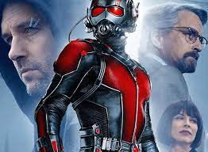
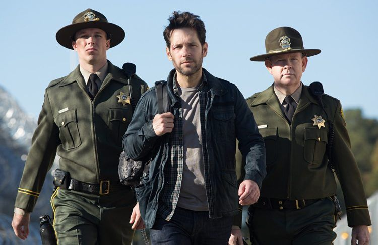
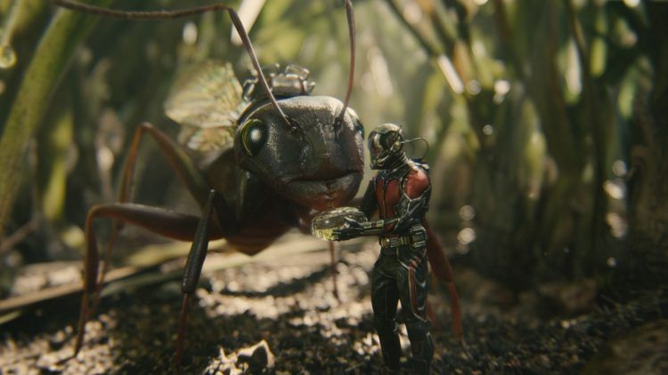
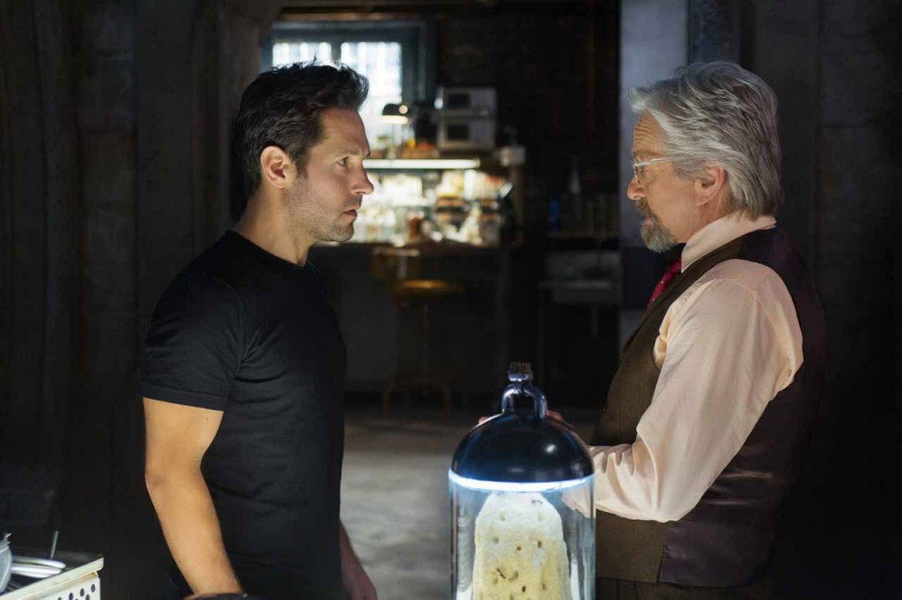
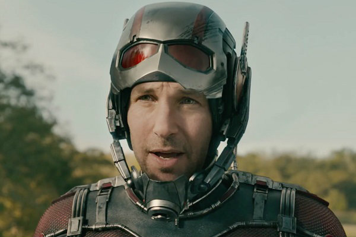
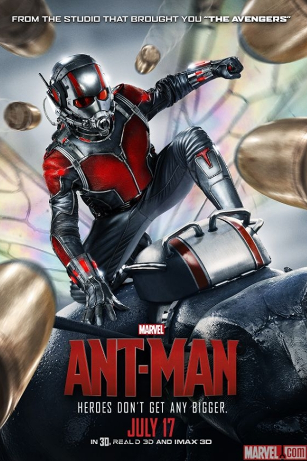

TÓPICOS FALADOS EM NOSSO SITE
|
|
V

Dr. Hank Pym transforma um talentoso ladrão no herói Homem-Formiga. Ele quer impedir que seu antigo pupilo consiga replicar a fórmula da roupa que dá o poder do encolhimento, força sobre-humana e a capacidade de controlar um exército de formigas.
Scott Lang é um vigarista especializado em invadir locais e roubar objetos, e agora precisa assumir seu lado heróico e ajudar o bioquímico Hank Pym a proteger os segredos por trás do espetacular traje do Homem-Formiga.
O Dr. Pym, que já foi membro da equipe Os Vingadores, descobriu um grupo de partículas sub-atômicas capazes de alterar o tamanho dos corpos, e esse super-poder será o trunfo de Lang para enfrentar perigosos vilões.

Um super-herói é tão importante – e, principalmente, relevante – quanto o seu vilão. É por isso que Batman (Coringa), Superman (Lex Luthor) e Homem-Aranha (Duende Verde) são tão populares e volta e meia estão nas telas, ao passo que o Lanterna Verde e o Hulk, por exemplo, ainda relutam para encontrar suas versões cinematográficas definitivas.
A mais recente aposta da Marvel Studios atende por Homem-Formiga, um personagem que é bastante caro aos fãs, mas praticamente desconhecido pelo público em geral. E ainda que este primeiro filme (o longa termina com a promessa “O Homem-Formiga voltará...”) tenha seus altos e baixos e no geral se saia melhor do que o esperado, tem seu calcanhar de Aquiles justamente no arqui-inimigo, um tipo estereotipado e raso, com motivações simplistas e sem maiores repercussões. E sem configurar de fato em uma ameaça, os próprios atos heroicos do protagonista acabam soando exagerados.

Desde de que a Marvel criou seu universo cinematográfico, cada novo filme é um evento muito esperado pelos fãs. E o estúdio vem provando que mesmo heróis mais desconhecidos do grande público são capazes de se destacar nas bilheterias (leia aqui sobre o sucesso do filme).
Aparentemente, um dos segredos dos filmes "menores", como Homem-Formiga e Guardiões da Galáxia, é fazer com que a história vá além do que se espera tradicionalmente de um super-herói, mas que se mantenha dentro de um formato já testado e aprovado por Hollywood. No caso de Homem-Formiga, a linha narrativa escolhida foi a das histórias de formação de equipe improváveis para missões complexas, como Missão Impossível e 11 Homens e um Segredo, dentre outros.
E essa fórmula foi uma casamento perfeito para a transposição do personagem dos quadrinhos, amarrando a história dos dois Homens-Formigas, do Jaqueta Amarela e da Vespa de uma forma muito semelhante, mas mais coerente que a dos quadrinhos.

Fora das telas, uma polêmica surgiu em torno da escolha do Homem-Formiga para estrelar um filme por conta da fase do personagem em que Hank Pym bateu e ofendeu sua esposa, Janet van Dyne. Os protestos, que retomam as várias alegações de machismo no universo cinematográfico da Marvel, giram em torno da opção do estúdio de promover um personagem que bate em mulheres. Cabe dizer que a questão da violência doméstica foi amplamente discutida em todo o decorrer da carreira do Homem-Formiga e sempre foi tratada e recriminada de forma explícita.
Além disso, essa questão não foi levada para o filme, no qual Pym é viúvo e a grande questão emocional é a forma como ele abandonou sua filha Hope van Dyne (Evangeline Lilly) na infância, que serve de paralelo para a questão de Scott Lang e sua filha Cassie.


SITES FONTES
|
|
V
TRAILER OFICIAL DO FILME
|
|
V
AINDA EM NOSSO SITE
|
|
V